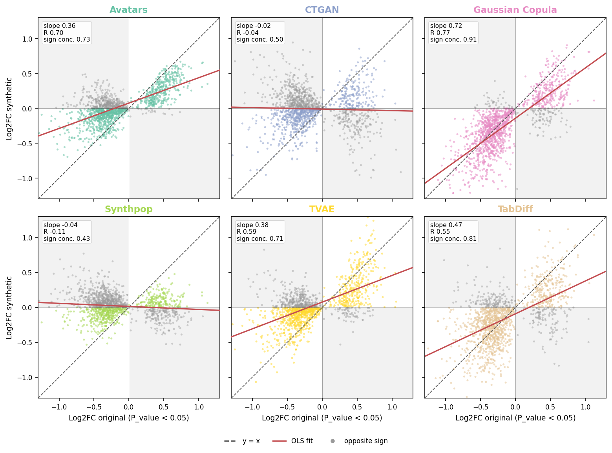

Differential Gene Expression (DGE)¶
DGE analysis identifies genes with statistically significant expression changes between biological conditions. SynOmicsBench compares the DGE results of the original and synthetic data on two levels: whether the synthetic data recover the same differentially expressed genes (DEGs) with the same direction (F1-GCS), and whether the effect sizes of the original DEGs are preserved (effect-size calibration).
Gene Concordance Score (F1-GCS)¶
Rank score¶
Each gene \(i\) is assigned a rank score combining effect size and significance:
where \(s_i\) is the significance value of the gene (column sig_col: nominal P-value or FDR Q-value, as the user decides), clipped at 0.001. A gene is differentially expressed when \(s_i\) is below sig_thr (default 0.05).
Recall, precision and F1-score¶
With \(N_\text{sig}\) the number of genes differentially expressed in both datasets with the same direction:
Recall is the fraction of the original DEGs recovered with the same direction; precision the fraction of the synthetic DEGs that are concordant original DEGs. When the synthetic data have no DEG, precision is undefined (NaN) and F1-GCS is 0; F1-GCS is 0 whenever no gene is concordant.
Effect-size calibration¶
On the genes significant in the original data, the synthetic Log2FC is regressed on the original Log2FC by ordinary least squares:
- Slope: 1 means effect sizes are preserved, below 1 attenuated, above 1 inflated;
- Pearson: how tightly the genes follow the regression line;
- SignConcordance: fraction of the original DEGs whose synthetic Log2FC has the same sign. Genes with a zero Log2FC have no sign and are left out.
Genes with a non-finite Log2FC are dropped; slope and correlation need at least 3 genes.
Code Example¶
import pandas as pd
from synomicsbench.metrics.narrow_utility.DGE import GCSAnalyzer
original_dge = pd.read_csv("original_dge_path.csv")
synthetic_dge = pd.read_csv("synthetic_dge_path.csv")
analyzer = GCSAnalyzer(
term_col="Gene",
nes_col="Log2FC",
sig_col="P_value", # or "Q_value"
sig_thr=0.05,
)
# One metric -> float
f1 = analyzer.compute_metrics(original_dge, synthetic_dge, metrics="F1")
# Several metrics -> dict (metrics=None returns all of them)
scores = analyzer.compute_metrics(
original_dge, synthetic_dge,
metrics=["Recall", "Precision", "F1", "Slope", "Pearson", "SignConcordance"],
)
Available metrics: Recall, Precision, F1, Slope, Pearson, SignConcordance.
To compare several synthetic datasets at once:
dataset_dict = {
"Avatars": "DGE/avatars_0.csv",
"CTGAN": "DGE/ctgan_0.csv",
"Gaussian Copula": "DGE/gaussiancopula_0.csv",
"Synthpop": "DGE/synthpop_0.csv",
"TVAE": "DGE/tvae_0.csv",
"TabDiff": "DGE/tabdiff_0.csv",
}
table = analyzer.compute_metrics_datasets("DGE/origin.csv", dataset_dict)
# one row per dataset, one column per metric
Effect-size calibration plot¶
The calibration plot shows the synthetic versus original Log2FC of the original DEGs, with the identity line, the OLS fit and, in each panel, the slope, Pearson R and sign concordance. Groups of genes can be highlighted:
fig, calibration = analyzer.plot_calibration_scatter(
ori_data="DGE/origin.csv",
dataset_dict=dataset_dict,
highlight={
"MHC-I": ["HLA-A", "HLA-B", "HLA-C", "B2M"],
"MHC-II": ["HLA-DRA", "HLA-DRB1", "HLA-DPA1"],
},
)
fig.savefig("dge_calibration_scatter.png", dpi=300, bbox_inches="tight")
calibration is a table with the OLS slope and intercept, Pearson correlation, sign concordance (with its binomial test P-value) and number of genes of each dataset.

Log2FC of the genes differentially expressed in the original Melanoma cohort (responders versus progressors), original versus synthetic (seed 0), with slope, Pearson R and sign concordance in each panel.